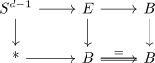
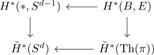
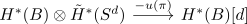

thom isomorphism in F2
Proposition
Let $\pi: E \rightarrow B$ be a spherical fibration of rank $d-1$.
Then the map
\begin{align*}
H^*(B;\mathbb{F}_2)[d] \rightarrow& \tilde{H}^*(\mathrm{Th}(\pi); \mathbb{F}_2) \\
x \mapsto& x \cdot \overline{u}
\end{align*}
is an isomorphism
see:
- reduced cohomology of a mapping cone as module of the cohomology
- cup product of singular cohomology
- F2 thom class
Proof
Consider the diagram

given by Leray-Hirsch for the identity fibration
Now by

now $\tilde{H}^*(S^d,\mathbb{F}_2)$ is free. Hence <leray hirsch> gives
\begin{align*}
H^*(b) \otimes \tilde{H}^*(S^d) \rightarrow \tilde{H}^*(\mathrm{Th}(\pi))
\end{align*}
where the construction of the map in leray hirsch says that the map is given by
